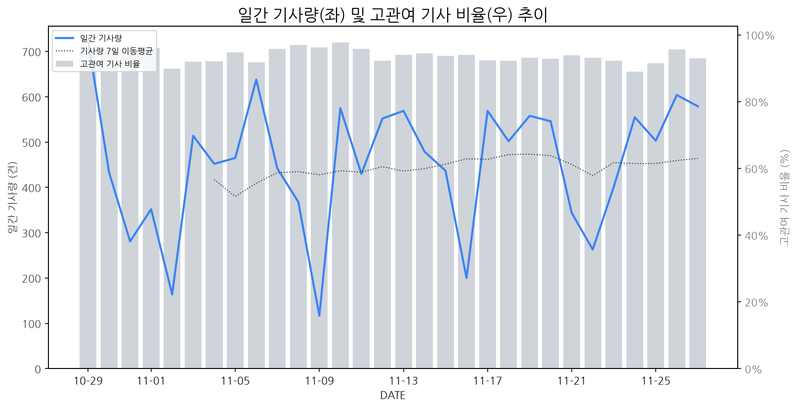

1
시장 활동 지표
기사량 추세 & 이상 징후 탐지
시장의 '전체 기사량'이 평소보다 비정상적으로 급증했는지(Spike)를 차트로 확인하고, LLM이 분석한 급등의 핵심 원인을 파악할 수 있음

고관여 기사란? 산업 연관 키워드로 수집된 기사들 중 디스플레이 키워드에 가중치를 반영하여 도출된 관련성 높은 기사
수집된 기사 수 (2026-11-27)
579
+6% WoW
기사량 변동 수준 (7일 이동평균 대비)
±6.7% 이하
2
오늘의 키워드
급격한 관심 ↑, 주목해야 할 키워드
1
ar
+2.8σ
에이서 AR 글래스 GR100F 출시 소식으로 AR 기술 및 관련 디스플레이 수요 기대감 증폭.
Related Metrics
금일 언급량: 10, 전일 대비: +4
Interpretation
AR 디스플레이 시장 성장 기대.
Next Step
'ar' 관련 상세 기사 및 경쟁사 반응 모니터링
3
실시간 Risk 키워드
경계해야 할 시그널 탐지
특정 토픽의 부정 감성 점수가 급등할 때 이를 즉시 탐지하고, "근거 기사" 링크를 통해 리스크의 실체를 빠르게 파악할 수 있음
!
AI 휴머노이드 로봇 미국 특허
하락폭: 0.04
- AI 휴머노이드 로봇 미국 특허 감성 점수 급락 원인: 디스플레이 및 연관 산업은 AI 서버 투자로 인한 AI 화질 보정 기술 발전 및 대형 TV 패널 수요 증가의 긍정적 수혜를 기대했으나, 관련 기사에서 라온로보틱스, 져스텍 등 일부 로봇 관련 기업의 강세와 LG그룹의 AI 사업화 구상이 부각되며 투자자들의 관심이 해당 분야로 분산되었습니다. 이는 AI 휴머노이드 로봇 특허에 대한 투자 매력이 상대적으로 감소한 것으로 해석될 수 있습니다.
- 디스플레이 제조 기업 관점에서의 잠재적 영향: AI 휴머노이드 로봇 관련 기술 개발 및 특허 확보 경쟁 심화가 예상되는 가운데, 투자 관심 분산은 신규 기술 도입 및 R&D 투자에 대한 자금 조달 환경에 단기적인 부담으로 작용할 수 있습니다. 또한, 경쟁사들의 AI 기술 도입 가속화로 인해 디스플레이 패널에 통합될 AI 기능의 차별화 경쟁이 심화될 가능성이 있습니다.
Current Status
오늘 점수: 0.48, 7일 평균: 0.52
Key Evidence Article (Most Negative)
4
주요 이벤트 모니터링
실시간 산업 동향 파악을 위한 주요 활동
최근 발생한 주요 기업들의 신제품 출시, 투자 등 주요 이벤트를 제공하여 매일 경쟁사 동향을 확인할 수 있음
삼성전자가 미국과 중국이 주도하는 휴머노이드 로봇 시장 패권 경쟁에 본격적으로 뛰어들었다. 이는 기존 디스플레이 사업 외 신성장 동력 확보를 위한 전략적 행보로 분석된다.
Impact
휴머노이드 로봇의 핵심 부품으로서 디스플레이 기술의 중요성이 부각되며, 관련 디스플레이 시장의 기술 개발 및 투자 확대가 가속화될 전망이다.
Next Step
디스플레이 제조 기업은 휴머노이드 로봇의 요구사항에 부합하는 유연하고 내구성이 뛰어난 디스플레이 기술 개발에 집중하고, 로봇 기업과의 협력을 강화해야 한다.
삼성과 LG디스플레이는 대형 OLED 시장에서 잠시 숨 고르기에 들어갔으나, 마이크로 LED 기술 개발 및 상용화를 두고는 치열한 경쟁 구도를 형성하고 있습니다.
Impact
마이크로 LED 기술 개발 경쟁 심화는 향후 차세대 디스플레이 시장의 판도를 결정짓는 중요한 요인이 될 수 있으며, 이는 관련 부품 및 소재 시장에도 큰 영향을 미칠 것입니다.
Next Step
현재의 경쟁 구도를 면밀히 분석하여, 기술 리더십 확보와 더불어 차별화된 시장 진입 전략을 수립해야 합니다.
작은 공간에서도 몇천원으로 설치 가능한 '간편 트리'가 올겨울 인기를 얻고 있습니다. 이는 소비자들이 부담 없이 겨울 분위기를 연출하려는 경향을 반영합니다.
Impact
이러한 트렌드는 소형 디스플레이, LED 조명, 전자 부품 등 간편 트리 제작에 필요한 관련 부품 시장의 수요 증가로 이어질 수 있습니다.
Next Step
디스플레이 제조 기업은 간편 트리에 적용 가능한 저비용, 고효율의 소형 디스플레이 및 연관 부품 개발 및 마케팅 강화 방안을 모색해야 합니다.
메모리 가격이 급등하면서 스마트폰 시장 전반에 수요 위축이 나타나고 있으며, 이에 따라 삼성전자도 스마트폰 생산량을 축소하는 결정을 내렸습니다.
Impact
스마트폰 시장 위축은 디스플레이 패널 수요 감소로 이어져 디스플레이 제조 기업들의 출하량 및 수익성에 부정적인 영향을 미칠 수 있습니다.
Next Step
디스플레이 제조 기업은 메모리 가격 변동성과 스마트폰 수요 변화에 대응하기 위해 생산 계획을 유연하게 조정하고, 고부가가치 디스플레이 기술 개발 및 신규 시장 확보를 통해 포트폴리오를 다각화하는 방안을 모색해야 합니다.